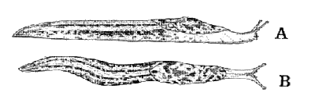

The Data
Simple least squares and linear regression are useful tools when a response variable (e.g. hardness of concrete) is linearly related to an explanatory variable (e.g. curing temperature). In such linear relationships, the crosses in a scatterplot are scattered round a straight line. If the crosses in a scatterplot follow a curve, the relationship is called nonlinear and these methods are no longer appropriate.
We approach the topic of nonlinear regression through a data set that was used by Harold Henderson and Neil Cox at the Ruakura Research Centre of AgResearch in Hamilton, New Zealand to teach nonlinear regression. The sequence of models that is used here is based on their analysis of the data.

Limax maximus: A, lateral aspect; B, dorsal aspect
Over a period of 4 years, 100 slugs of the species Limax maximus were collected by two Ruakura researchers, Gary Barker and Rosemary McGhie by regular sampling of a population living under a macrocarpa hedge in Hamilton (NZ Entomologist, 8, 1984, 106-111). The slugs were preserved in a relaxed state and subsequently their weight (gm) and length (cm) recorded. Growth occurs throughout the year and there is a wide range of body size in any given population. There is a seasonal reproductive cycle and slugs live for several years. Greatest numbers of juvenile slugs occur from May to September.
Scatterplot
The scatterplot shows a strong relationship between slug weight and length — longer slugs tend to be heavier. The diagram also displays the marginal distributions of weight and length; note that the slug weights have a highly skew distribution.
Click any cross to display that slug's length and weight.